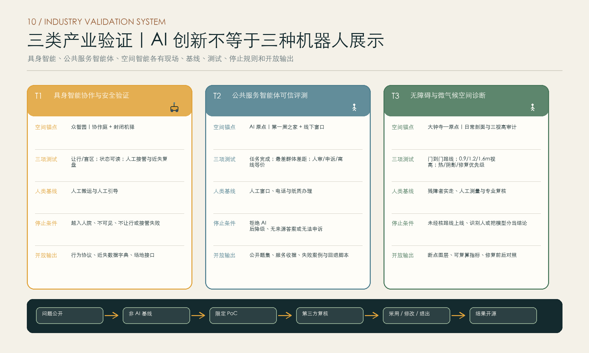
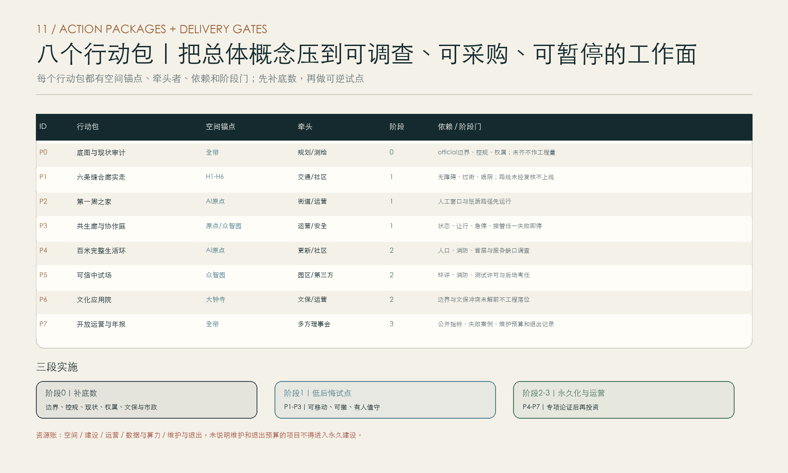

到站成邻
ARRIVE, BELONG
从北部研发到达、中部生活交换，到南部文化归属：让人才愿意留下日常，也让有用的机器人在清楚规则下进入城市生活。
总览地图｜三层范围

边界和重点区域均为仓库 provisional rough geometry，不是官方红线或精确面积依据；官方 polygon 到位后全包重算。
北京空间语法｜门 · 站 · 院 · 街 · 园

五个词分别处理进入、换乘、交往、生产与自然，不复制古建，不把北京文化降为装饰纹样。
重点区域｜北到达 · 中交换 · 南归属
众智园
可信中试开源院、共享实验、人机协作庭与封闭验证机驿。
AI 原点社区
完整生活第一周服务、短住、照护、共学与多语日常。
大钟寺
文化城市门北京时间、铁路到达、中关村创业传播。
用地分区｜一带三段两翼多院

- 南门户文化与公共交流用地
- 大钟寺创新服务混合用地
- AI原点完整社区服务用地
- 人才与居民混合居住用地
- 学院协同与开放教育用地
- 众智园AI研发与中试用地
- 京张记忆公园与连续绿色中轴
AI 原点社区｜百米生活环概念原型

功能关系和权限梯度为概念原型，不表达真实宗地、道路红线或建筑落位。
新来者第一周｜从被接住到开始成邻

七个检查点全部保留人工窗口和纸质路线；不用 App，也不降低服务顺序与质量。
交通慢行｜蓝绿公共空间

中央京张记忆绿脊、两条纵向接驳线、六条东西缝合廊道。人院保留安静，共生廊允许人与成熟服务机器人自然相遇。
人院—共生廊—协作庭—机驿｜四域共生梯度

AI 界面贯穿四域，负责公开状态、人工接管与退出记录。机器人在共享空间公开任务和路线、遇人让行、随时接受人工接管。
产业验证｜三类 AI，三套基线与闸门

机器人只是其中一类；三项验证均保留非 AI 基线、限定期限、第三方复核、停止条件和开放输出。
AI 场景｜12 个服务，只有 3 个机器人
第一周到达助手
多语社区导航
夜归安全互助
儿童长者照护协同
无障碍路线审计
开放实验室预约
社区议题共创
线下同等服务镜像
京张地名叙事
具身智能协作庭
微物流共生廊
公园共养巡检
核心指标
任务覆盖｜证据链
任务与许可
缺口与边界
九个核心层 + OSM语境
公式与置信度
拓扑与图文一致
来源见 sources.json；假设见 assumptions.json；任务覆盖见 compliance_matrix.json；标准与深度见 standard_matrix.json 和 design_depth_matrix.json；自检状态见 self_check.json。
八个行动包｜从补底数到长期运营

P0-P7 分别处理底图审计、缝合廊、第一周之家、共生试点、完整生活环、可信中试、文化应用和长期开放运营。
第一周之家｜90 天试点

30 天基线、30 天试运行、30 天评估。只有服务底线、共享路权和人工接管经真实使用者验证后，才进入下一阶段。
更新项目｜三期实施
近期 · 开门
慢行断点、第一周之家、一段共生廊和一处协作庭。
中期 · 成院
原点社区、八学院共学、开放实验室、大钟寺工坊。
长期 · 成邻
众智园中试、全带运营、年度开源与社区纠偏。